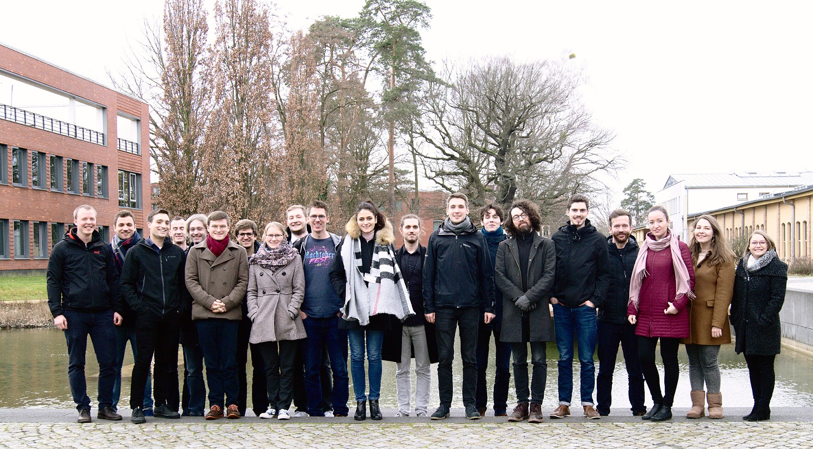

ZEUS Workshop 2020
February 20-21, 2020, Potsdam, Germany
Program
Thursday, February 20, 2020
- 09:00 Registration
- 09:30 Welcome
- 09:45 Session 1 - Process Analytics
Marius Breitmayer, Manfred Reichert.
Towards a Framework for Context-Aware Resource Behaviour Analysis
Maximilian Völker, Luise Pufahl
Towards a Comprehensive Methodology for Process Mining
- 10:45 Coffee Break
- 11:15 Keynote
Florian Tschorsch.
The Dream of Anonymous Data
- 12:30 Lunch Break
- 13:30 Session 2 - Business Process Modeling
Simon Remy.
Incorporating Organizational Aspects into Fragment-based Case Management
Saliha Irem Besik, Johann-Christoph Freytag.
Managing Consent in Workflows under GDPR
Thomas Heinze, Viktor Stefanko, Wolfram Amme.
BPMN in the Wild: BPMN on GitHub.com
- 16:15 Event: Potsdam City Tour
- 18:00 ZEUS Dinner
Friday, February 21, 2020
- 09:30 Keynote
Niall Deehan.
Keynote: Common Pitfalls in Microservice Integration and how to Avoid Them
- 10:45 Coffee Break
- 11:15 Session 3 - Cloud and Serverless Computing
Fabiana Rossi.
Auto-scaling Policies to Adapt the Application Deployment in Kubernetes
Robin Lichtenthäler, Stefan Winzinger, Johannes Manner, Guido Wirtz.
When to use FaaS? - Influencing factors for and against using serverless functions
- 12:30 Lunch
- 13:30 Session 4 - Miscellaneous
Laura Sophie Thiele, Nico Brehm.
Managing Social Challenges in Cross-Organizational Event-Based Systems
Oliver Kopp.
The Ultimate Comparison Framework
- 14:30 Closing Session, Best Presentation Award

Workshop
Local Organizers
Proceedings